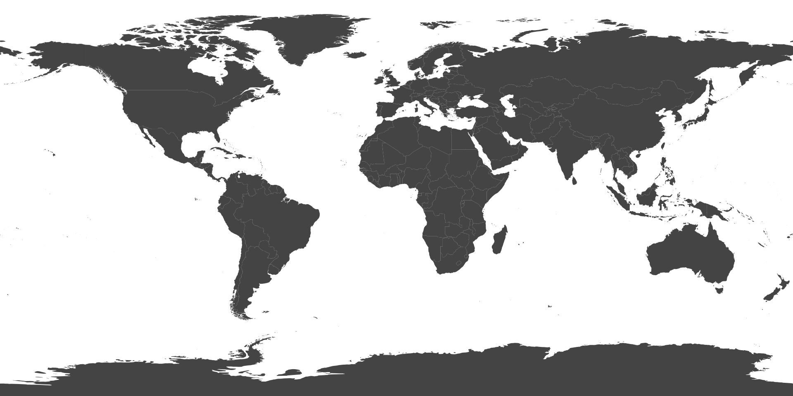

A PERSONAL PHOTO JOURNAL
Where I’ve
been.
Choose a pin to open the photographs and memories collected in that place.

＋
No places pinned yet.
Your first journey will appear here.
Map data: Natural Earth · CC0
Notes